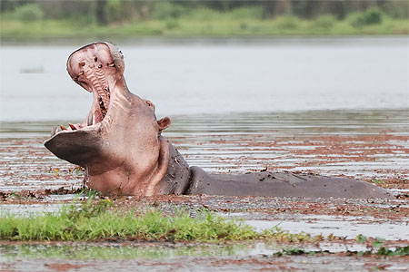
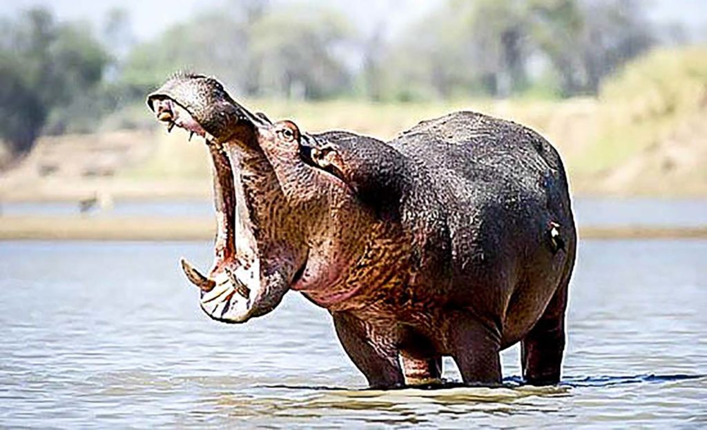

La mare aux hippopotames est un site naturel situé à proximité de Bobo-Dioulasso, offrant un refuge paisible pour ces majestueux animaux. C'est un endroit idéal pour les amoureux de la nature et les passionnés de faune sauvage, offrant une expérience unique d'observation des hippopotames dans leur habitat naturel.
La mare aux hippopotames abrite une variété d'espèces animales et végétales, créant un écosystème riche et diversifié. Outre les hippopotames, des elephants, on peut y trouver des oiseaux aquatiques, des poissons et une végétation luxuriante qui contribue à l'équilibre écologique du site.
La mare aux hippopotames joue un rôle crucial dans la préservation de la biodiversité locale. En tant que refuge pour les hippopotames et d'autres espèces, elle contribue à maintenir l'équilibre écologique de la région. De plus, elle offre une opportunité précieuse pour sensibiliser le public à l'importance de la conservation de la faune et de la flore locales.
